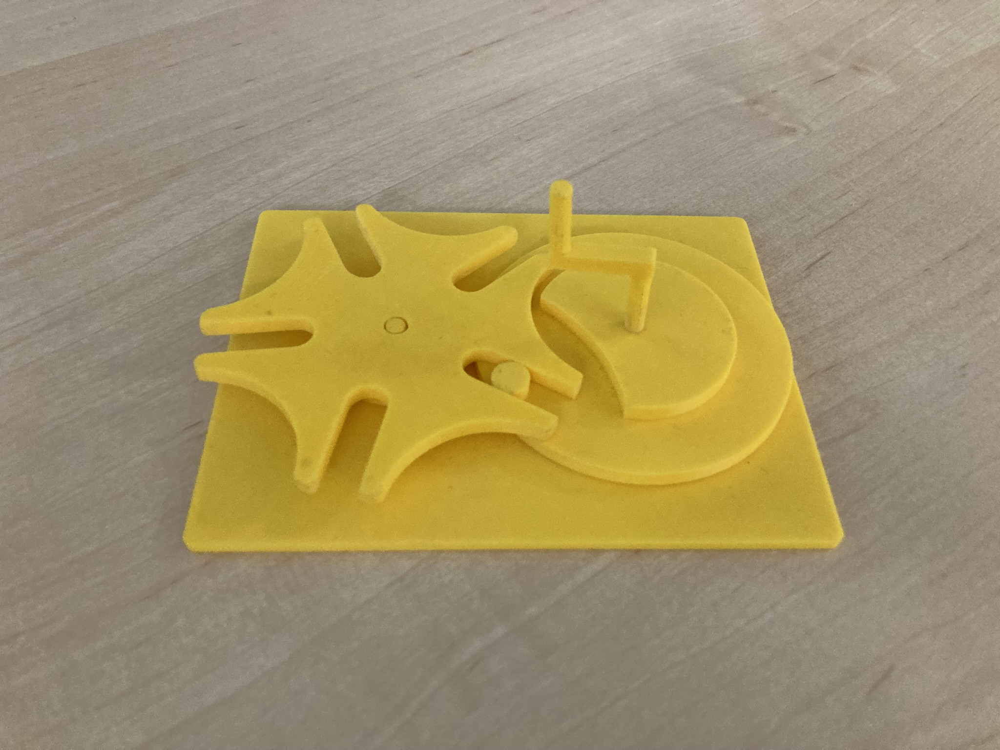

Na tento projekt bylo nastaveno hned několik podmínek. Jednoduchý mechanismus musel mít aspoň jedno uložení s přesahem, jedno s vůlí a musel vážit maximálně 100 gramů. Vybral jsem si maltézský kříž s pěti chody, takže jedno otočení je krok o 72°.
- Nízká váha
- Bez ostrých hran
- Lehce složitelný
Technologie: 3D tisk, Inventor, Průša slicer
Zvolil jsem si cestu jednoduššího projektu, který jsem si ale chtěl sám navrhnout. Jsem rád, že jsem zvládl vymodelovat maltézský kříž bez tutoriálů a nákresů.